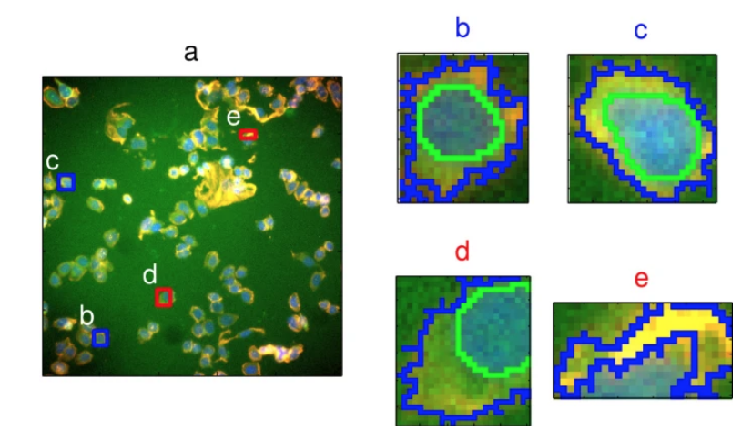
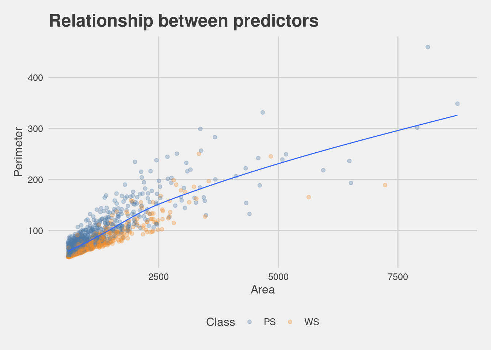

1.4 A model with two predictors
data(segmentationData)This example uses segmentationData. Data originates from an experiment from Hill et al. (2007), a study on “Impact of Image Segmentation on High-Content Screening Data Quality for SK-BR-3 Cells.” BMC Bioinformatics.

The data set includes a Case vector containing Train and Test variables, with a total of 61 different vectors, about cellular structures and morphology.
Selected for this first example are two predictors: EqSphereAreaCh1 and PerimCh1. The objective is to predict shape parameters of poorly-segmented (PS) and well-segmented (WS) cells from the Class variable.
This is the full list of variables in the set.
## [1] "Cell" "Case"
## [3] "Class" "AngleCh1"
## [5] "AreaCh1" "AvgIntenCh1"
## [7] "AvgIntenCh2" "AvgIntenCh3"
## [9] "AvgIntenCh4" "ConvexHullAreaRatioCh1"
## [11] "ConvexHullPerimRatioCh1" "DiffIntenDensityCh1"
## [13] "DiffIntenDensityCh3" "DiffIntenDensityCh4"
## [15] "EntropyIntenCh1" "EntropyIntenCh3"
## [17] "EntropyIntenCh4" "EqCircDiamCh1"
## [19] "EqEllipseLWRCh1" "EqEllipseOblateVolCh1"
## [21] "EqEllipseProlateVolCh1" "EqSphereAreaCh1"
## [23] "EqSphereVolCh1" "FiberAlign2Ch3"
## [25] "FiberAlign2Ch4" "FiberLengthCh1"
## [27] "FiberWidthCh1" "IntenCoocASMCh3"
## [29] "IntenCoocASMCh4" "IntenCoocContrastCh3"
## [31] "IntenCoocContrastCh4" "IntenCoocEntropyCh3"
## [33] "IntenCoocEntropyCh4" "IntenCoocMaxCh3"
## [35] "IntenCoocMaxCh4" "KurtIntenCh1"
## [37] "KurtIntenCh3" "KurtIntenCh4"
## [39] "LengthCh1" "NeighborAvgDistCh1"
## [41] "NeighborMinDistCh1" "NeighborVarDistCh1"
## [43] "PerimCh1" "ShapeBFRCh1"
## [45] "ShapeLWRCh1" "ShapeP2ACh1"
## [47] "SkewIntenCh1" "SkewIntenCh3"
## [49] "SkewIntenCh4" "SpotFiberCountCh3"
## [51] "SpotFiberCountCh4" "TotalIntenCh1"
## [53] "TotalIntenCh2" "TotalIntenCh3"
## [55] "TotalIntenCh4" "VarIntenCh1"
## [57] "VarIntenCh3" "VarIntenCh4"
## [59] "WidthCh1" "XCentroid"
## [61] "YCentroid"## [1] 2019 61Parsimony:
## Class Predictor_A Predictor_B
## 1 PS 3278.726 154.89876
## 2 WS 1727.410 84.56460
## 3 PS 1194.932 101.09107
## 4 WS 1027.222 68.71062
## 5 PS 1035.608 73.40559
## 6 PS 1433.918 79.47569Cross validation on the training set.
set.seed(2222)
folds <- vfold_cv(train, v = 10)A first visualization of the relationship between the two predictors.
## `geom_smooth()` using method = 'gam' and formula 'y ~ s(x, bs = "cs")'
Check for Class balance of the response variable. This would be the first level tranformation of the response, this type of transformation is considered a structural transformation, we will see more about it later in the book.
tb_class <- table(train$Class)
pr_class <- round(prop.table(tb_class), 2)
rbind(tb_class, pr_class)## PS WS
## tb_class 636.00 373.00
## pr_class 0.63 0.37up_samp_ws <- tb_class[2]/sum(tb_class)Recipes
library(themis)
log_rec_natural_units <- recipe(Class ~ Predictor_A + Predictor_B, data = train) %>%
step_upsample(Class, over_ratio = up_samp_ws)
log_rec_inverse_units <- recipe(Class ~ Predictor_A + Predictor_B, data = train) %>%
step_upsample(Class, over_ratio = up_samp_ws) %>%
step_BoxCox(all_numeric())Workflow
logistic_reg_glm_spec <-
logistic_reg() %>%
set_engine('glm')
log_wfl_natural_units <- workflow() %>%
add_model(logistic_reg_glm_spec) %>%
add_recipe(log_rec_natural_units)
log_fit_natural_units <- log_wfl_natural_units %>%
fit(train)
log_fit_natural_units %>%
extract_fit_parsnip() %>%
tidy()## # A tibble: 3 × 5
## term estimate std.error statistic p.value
## <chr> <dbl> <dbl> <dbl> <dbl>
## 1 (Intercept) 1.58 0.248 6.36 1.99e-10
## 2 Predictor_A 0.00301 0.000281 10.7 8.95e-27
## 3 Predictor_B -0.0682 0.00604 -11.3 1.47e-29Prediction
with_pred_natural_units <- log_fit_natural_units %>%
augment(test)
with_pred_natural_units %>% head## # A tibble: 6 × 6
## Class Predictor_A Predictor_B .pred_class .pred_PS .pred_WS
## <fct> <dbl> <dbl> <fct> <dbl> <dbl>
## 1 PS 742. 68.8 PS 0.705 0.295
## 2 PS 1140. 86.5 PS 0.707 0.293
## 3 WS 692. 49.5 WS 0.429 0.571
## 4 WS 709. 50.4 WS 0.431 0.569
## 5 PS 1006. 89.9 PS 0.820 0.180
## 6 WS 1983. 112. PS 0.516 0.484Confusion Matrics
Roc Curve
with_pred_natural_units %>%
roc_curve(Class,.pred_PS) %>%
mutate(Format = "Natural Units") %>%
ggplot(aes(1 - specificity, sensitivity))+
geom_line(aes(color = .threshold), size = 1)+
geom_abline(linetype = "dashed", size = 1, color = "gray") +
scale_colour_continuous()+
theme_fivethirtyeight() +
theme(axis.title = element_text())Workflow set
Let’s compare the two transformations with a workflow_set():
full_workflow <- workflow_set(
models = list(logitstic = logistic_reg_glm_spec),
preproc = list(natural_units = log_rec_natural_units,
inverse_units = log_rec_inverse_units))
system.time(
grid_results <-
full_workflow %>%
workflow_map(
seed = 1503,
resamples = folds,
grid = 25,
control = control_grid(
save_pred = TRUE,
parallel_over = "everything",
save_workflow = TRUE),
verbose = TRUE)
)## user system elapsed
## 7.044 0.008 7.053 # user system elapsed
# 9.051 0.088 9.184
grid_results## # A workflow set/tibble: 2 × 4
## wflow_id info option result
## <chr> <list> <list> <list>
## 1 natural_units_logitstic <tibble [1 × 4]> <opts[3]> <rsmp[+]>
## 2 inverse_units_logitstic <tibble [1 × 4]> <opts[3]> <rsmp[+]>Roc curves for two different recipes
roc <- grid_results %>%
unnest(result) %>%
unnest(.predictions) %>%
select(wflow_id, .pred_PS, .pred_WS, .pred_class, Class) %>%
group_by(wflow_id) %>%
roc_curve(Class, .pred_PS)
roc_curves <- roc %>%
ggplot(
aes(x = 1 - specificity, y = sensitivity, group = wflow_id, color = wflow_id)
) +
geom_line(size = 0.5) +
geom_abline(lty = 2, alpha = 0.5, color = "gray50", size = 0.8)+
scale_color_tableau()+
theme_fivethirtyeight()+
theme(axis.title = element_text())
roc_curves